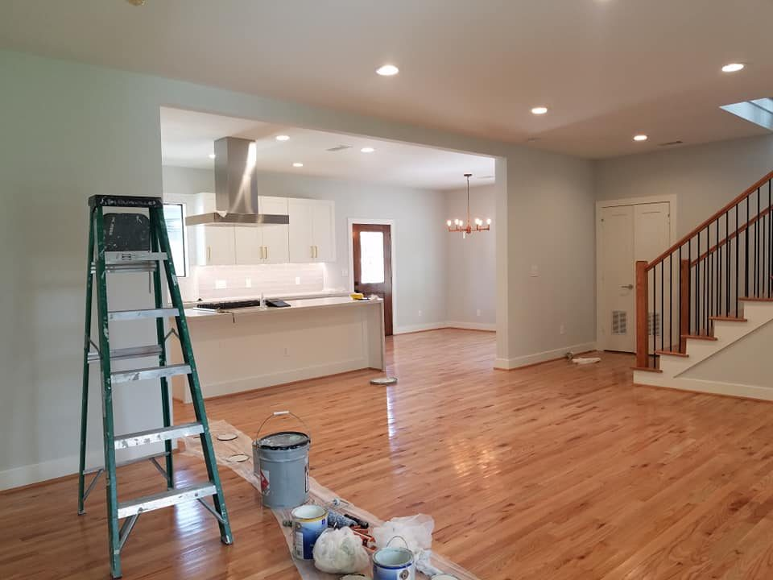
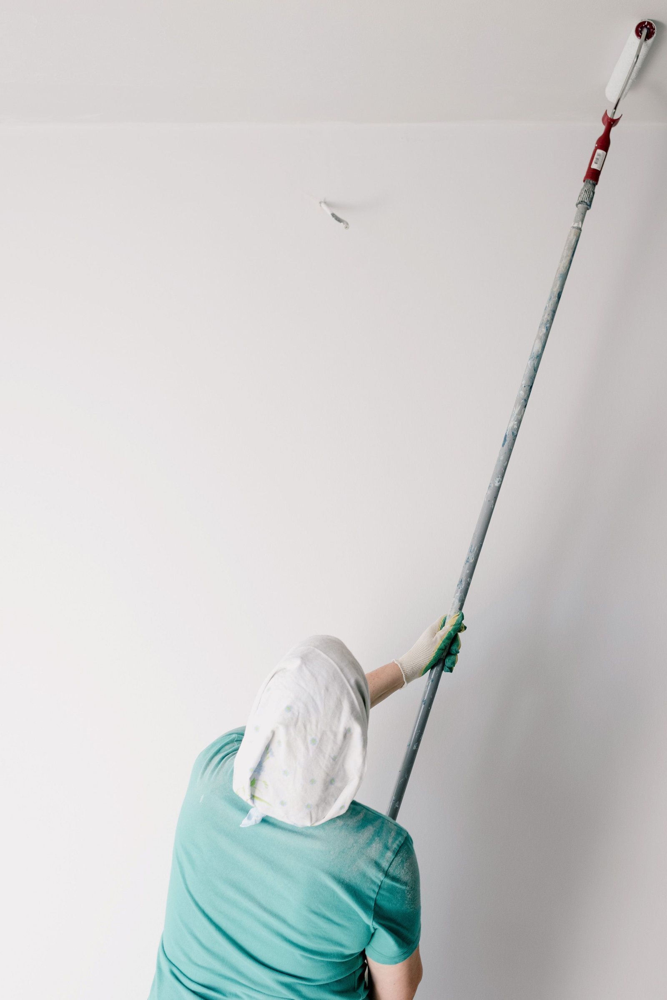
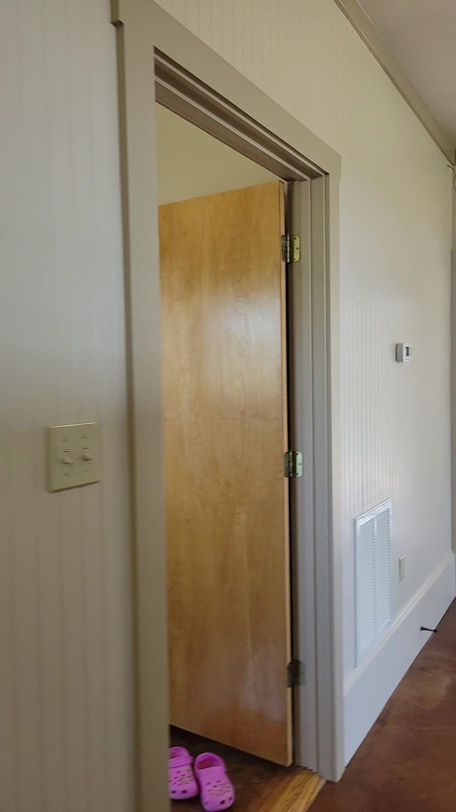
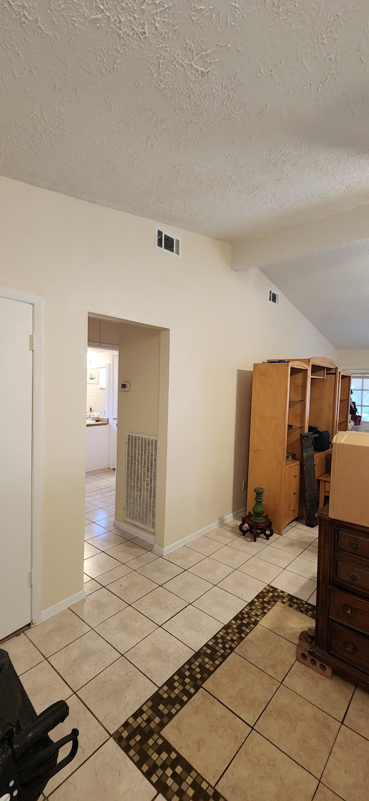
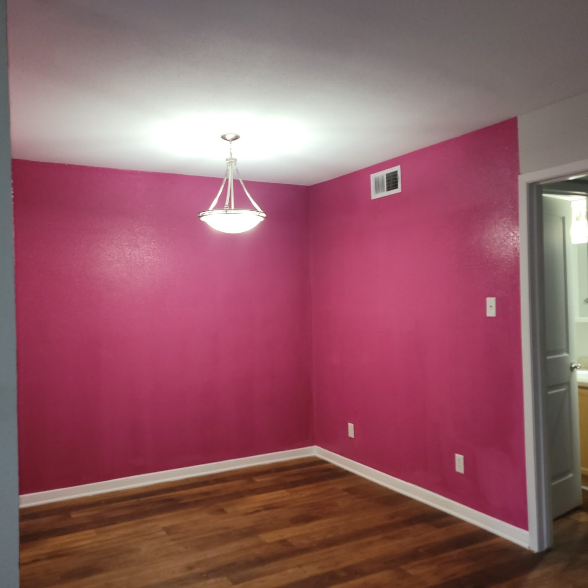

Azalea
Interior painting
Walls, ceilings and trim, cut in by hand and left with a straight line where the colour changes.

Katy — Azalea, Clay, Olive Grove
Interior and exterior painting, cabinet painting, door painting, drywall repair, and tile work with remodeling. Tell us which room, which colour and which part of the week.
What we work on
Every finish on this page has a name because a client should be able to point at the thing they want. Show us the swatch, say the room, and we will tell you what it takes.

Azalea
Walls, ceilings and trim, cut in by hand and left with a straight line where the colour changes.

Clay
Siding, trim and doors, prepared and painted as one job so the outside reads as one colour.

Olive Grove
Kitchen and bath cabinets, taken back, finished and put back with the hardware where it belongs.

Ink
Doors, frames, jambs and the returns around them. The part most paint jobs quietly skip.

Gallery White
Patches, cracks and holes made good and blended, so the coat on top has something sound to sit on.

Bisque
Tile laid, and the rooms around it rebuilt. The two go together because the trades have to share a week.

Bold rooms
This dining room is one of them. A colour this strong is easy to start and hard to stop, so almost all of the work is in the edges: where the wall meets the ceiling, where the trim stays white, and where the floor finally gives you somewhere to rest.
Frame 01Deep pink walls with white trim, and a wood floor underneath
The details
Trim is where a paint job gets judged. Nobody photographs a wall the way they photograph a door frame.
4.9
stars on Google
Soriano’s Painting & Remodeling
Katy, Texas
On Google
Big projects come up as often as small ones, and so does the tidiness afterwards. Both are on the list of things to get right.
Read the reviews on GoogleWhere we work
Katy is home. Cinco Ranch, Memorial and Houston Heights come up just as often on the Facebook page and in the Google listing. If you are just outside one of them, say so when you call and you will get a straight answer about whether it is worth the drive.
Contact
Which room, what is happening to the wall, and how the job fits with everything else in the house. A photo of the room from the doorway is worth more than a description.
Four questions
Colour on a screen is not the same as colour on a wall in west Houston light. We would rather talk about the colour with you than pretend a photograph settles it. Bring the colour you have in mind to the call and we will tell you what it does once it is on a real wall.
Both. Trim is where a paint job gets judged, and nobody photographs a wall the way they photograph a door frame. Casing, jamb and the returns around them are part of the job, not a line item you can leave out.
Yes. Big projects come up as often as small ones, and so does the tidiness afterwards. Both are on the list of things to get right. Tell us which room and what is happening to it and we will tell you what it takes.
Call or text (281) 682-3412 and say which room, what colour, and which part of the week you are thinking of. A photo of the room taken from the doorway is worth more than a description.